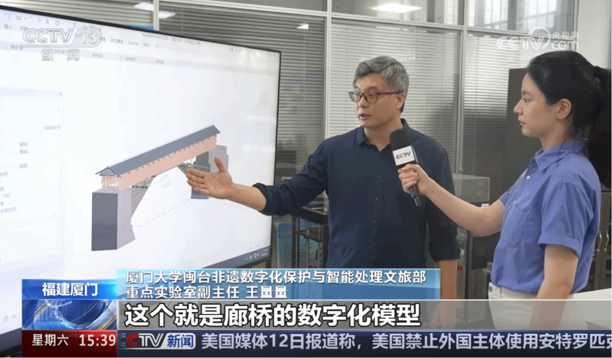
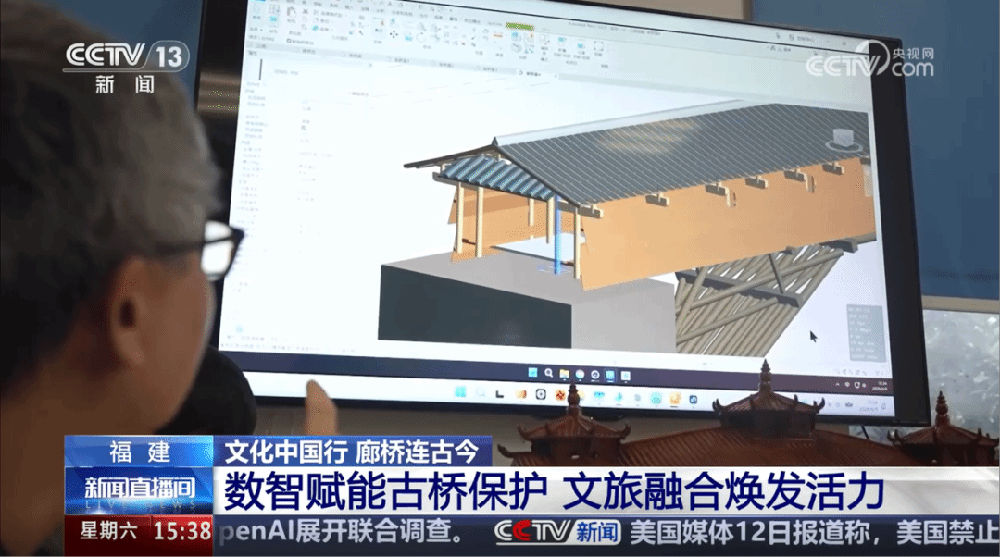
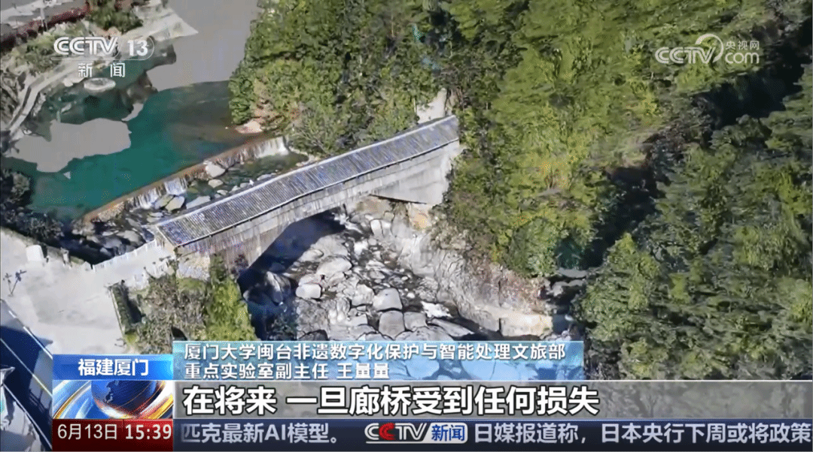
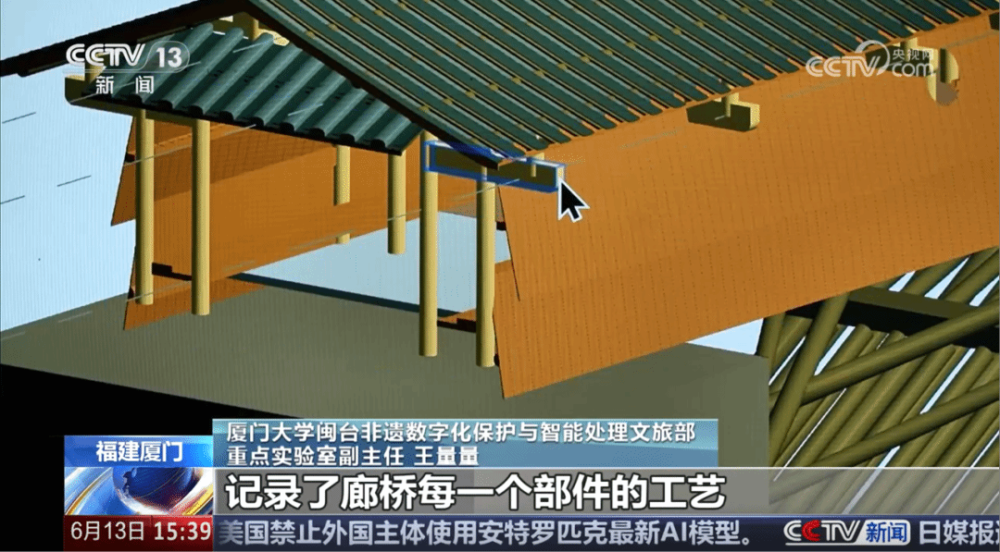
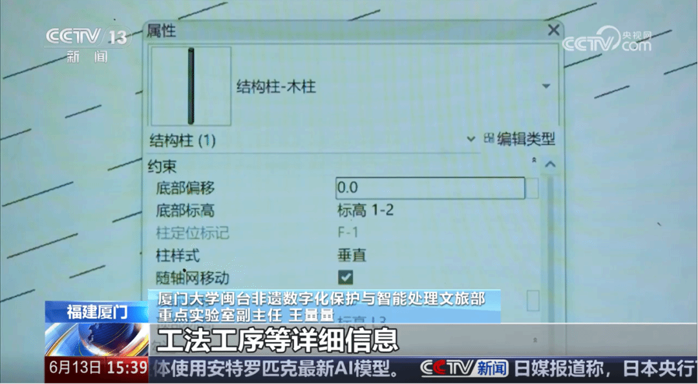
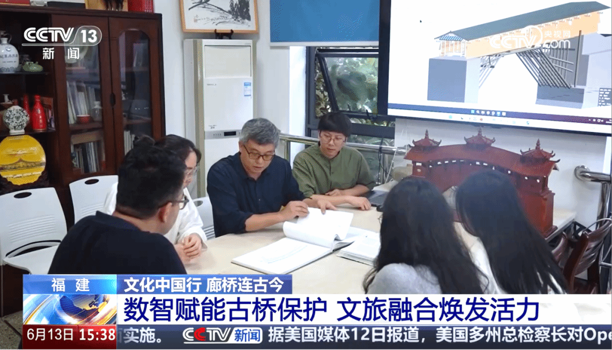
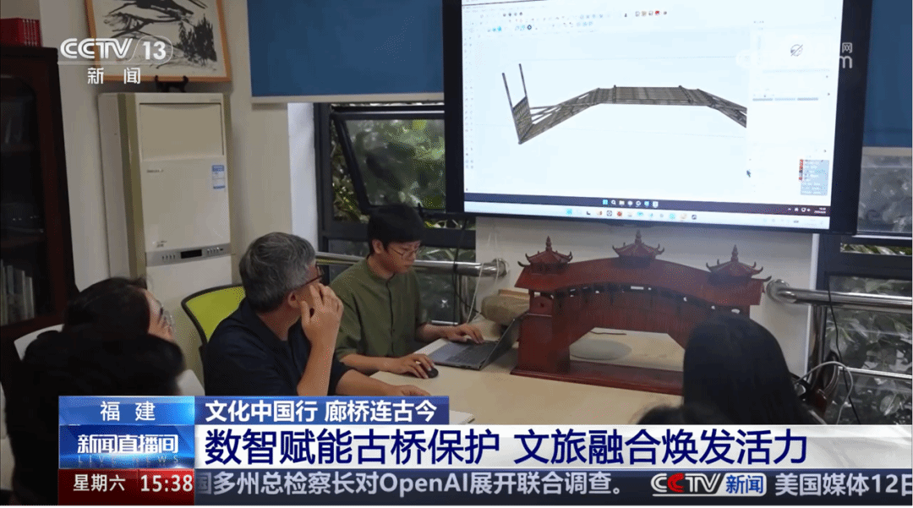
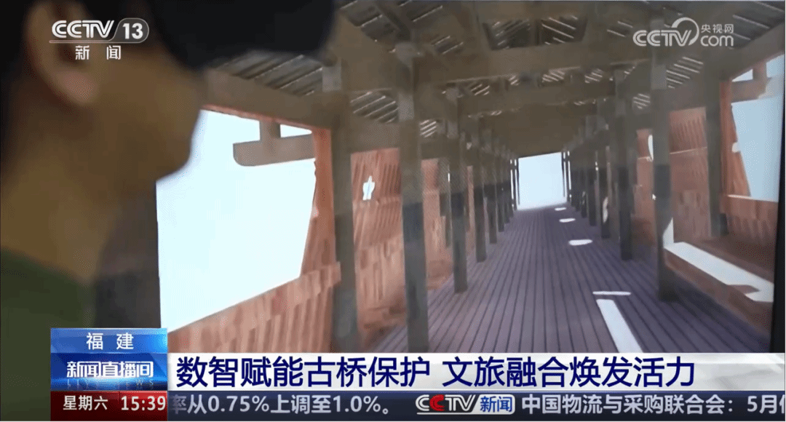

6月13日，在第21个“文化和自然遗产日”，中央广播电视台新闻频道（CCTV13）推出文化遗产保护专题报道，聚焦数字技术赋能中华优秀传统文化保护传承。实验室副主任、厦门大学建筑与土木工程学院王量量教授研究团队长期开展的闽浙木拱廊桥数字化保护与传统营造技艺研究作为典型案例受到重点关注。
木拱廊桥是我国传统木构建筑技术与桥梁工程智慧的重要代表，其传统营造技艺于2009年被列入联合国教科文组织《急需保护的非物质文化遗产名录》。近年来，依托闽台非遗文化数字化保护与智能处理文化和旅游部重点实验室，研究团队持续推进木拱廊桥数字化保护研究，发挥建筑学、人工智能、计算机视觉和数字媒体等多学科交叉优势，探索数字技术赋能传统建筑遗产保护与传承的新路径。

采访中，王量量教授表示：“这些档案就像廊桥的‘数字身份证’，不仅完整记录了桥体结构，还详细标注了用材树种、木料年代、营造工艺等关键信息。我们利用三维激光扫描、无人机航测等技术建立数字档案，不仅能够完整留存桥梁的结构细节，还可以自由切换视角，实现全方位、立体化观测。即使未来廊桥因自然灾害等原因出现损毁，也能够依托这些高精度数据开展科学研究和数字修复，最大程度保留其原有的历史信息和营造特征。”
 |
 |
 |
 |
寿宁福寿桥HBIM建筑信息模型
据介绍，研究团队持续开展福建省木拱廊桥数字化调查与高精度测绘工作，综合运用三维激光扫描、摄影测量建模等技术，对多座代表性木拱廊桥开展数字化采集与信息建档，逐步建立覆盖桥梁形态、结构构造、材料特征和营造工艺的精细化三维数字档案体系，为遗产保护、监测研究和科学修缮提供可靠的数据支撑。

在完成遗产本体数字化记录的基础上，团队进一步聚焦传统营造技艺的活态保护，通过深入福建、浙江木拱廊桥分布地区开展田野调查，访谈非遗传承人与传统工匠，结合口述史采集、影像记录和工艺流程跟踪，系统整理木拱廊桥从选桥址到搭拱架、架桥屋的完整营造流程，构建涵盖工匠经验、工具材料、建筑构件和工艺流程的数字化知识体系，并利用虚拟仿真、三维动画等技术实现传统营造过程的数字化复原与展示，让古老的建造智慧焕发新的生命力。


廊桥营造工艺数字化解析与VR体验项目
长期以来，实验室坚持将科学研究、人才培养与社会服务相结合，逐步形成“遗产调查—数字采集—信息建模—知识解析—展示传播”相衔接的遗产数字化研究特色，并将相关成果融入教学实践和社会科普活动，推动传统建筑遗产与非遗技艺走进校园、走向公众。
此次央视专题报道，不仅是对传统建筑遗产数字化保护工作的充分肯定，也彰显了数字技术赋能文化遗产保护传承的时代价值。未来，厦门大学建筑与土木工程学院将继续依托闽台非遗文化数字化保护与智能处理文化和旅游部重点实验室，深化人工智能、数字孪生、知识图谱等新技术与文化遗产保护的融合创新，持续推进木拱廊桥、福建土楼等多类型文化遗产的数字化保护与活态传承，为福建省文化遗产保护事业和中华优秀传统文化传承发展贡献厦大智慧与力量。
（点击观看原视频链接）
转自 https://mp.weixin.qq.com/s/kN97kST4uGwZYrjgaQ-LmQ